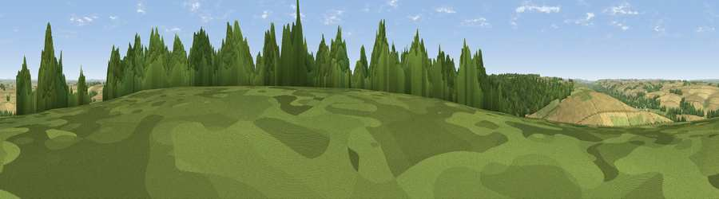

Viewpoint near Great Wishford
#27745 in England · top 47% of its area beats it · near Great WishfordThe view, rendered

A 360° render of this exact spot computed from the terrain model, tree cover and land cover — summer colours, afternoon light, calibrated against photographs of famous viewpoints. Real trees, hedges and buildings will differ in detail.
The panorama
Grey silhouette: terrain skyline in each direction (720 bearings, Earth curvature and refraction included). Dashed green: skyline with trees (+15 m) and buildings (+8 m) as obstacles. Blue strip: how far the ground is visible on each bearing.
Where the view opens
Wedge length = distance to the farthest visible ground on that bearing (vegetation-aware). Rings at 10, 25 and 50 km.
What fills the view
52% cropland · 28% woodland · 19% grassland
Angular shares of the visible panorama (visual magnitude), not map area. Landscape diversity 0.46 (0–1 Shannon).
Key numbers
More beautiful places nearby
The staircase of upgrades: each row has a higher view potential than everything closer. Driving times are estimates from straight-line distance, calibrated against real road routing — check an actual route before setting out.
| Place | Direction | Drive | Score |
|---|---|---|---|
| Viewpoint near Great Wishford | E · 1 km | ~3 min | 49.8 |
| Viewpoint near Steeple Langford | WNW · 1 km | ~3 min | 52.8 |
| Viewpoint near Hanging Langford | W · 4 km | ~9 min | 58.4 |
| West Hill | W · 5 km | ~11 min | 59.0 |
| Hydon Hill | SSW · 7 km | ~14 min | 61.2 |
| Marleycombe Hill | SSW · 13 km | ~24 min | 63.3 |
| Viewpoint near Fonthill Gifford | WSW · 15 km | ~28 min | 64.2 |
| Viewpoint near Bulford | ENE · 16 km | ~28 min | 70.3 |
51.11719, -1.91887 · source: screening · position refined by local search. Computed location — check access rights before visiting.